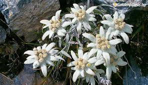
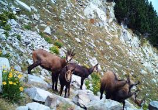

Флора на територията на Национален парк "Пирин"
Голямото разнообразие в релефно отношение е причина за изключителното разнообразие на растителния свят.
Парк Пирин е една от най-интересните в ботаническо отношение местности в България. Първите сведения за флората на местността, в която се намира днешния парк са от произведенията на ботаника Аугуст Гризебах, които са написани през първата половина на XIX век. Това са първите писмени сведения, в които се съобщава за вида бяла мура на територията на Балканския полуостров. Основни проучвания на флората на Пирин са правени през края на XIX век и началото на XX век.
На територията на Национален парк Пирин са установени около 1300 вида висши растения, което представлява повече от 30% от всички висши растения, които се срещат на територията на Република България. Освен тези висши растения са установени още над 300 вида мъхове и голямо количество водорасли.
Националният парк представлява особен интерес с големия брой ендемични видове, които могат да се видят тук. Установени са 18 вида локални ендемити, 15 български и много балкански ендемити. Локалните ендемити на националния парк са пирински мак, пиринска ливадина, урумов и кожухаров окситропис, яворкова клопачка, пиринска мащерка, давидов лопен, пиринска власатка и други.
Характерен представител на тези видове, който се среща на територията на парка, е еделвайсът. С времето той се е превърнал в символ на Пирин планина. Общият брой на защитените от закона видове е близо 60, а броят на видовете, присъстващи в Червената книга на България
На територията на Национален парк Пирин са обособени три растителни пояса – горски, субалпийски и алпийски. Това се дължи на сравнително голямата надморска височина на целия парк.
Фауна на територията на Национален парк "Пирин"
Голямото разнообразие на релефа, както и това, че планината има меридионална ориентация, е предпоставка за голямо разнообразие на животинския свят. Друга важна предпоставка за това разнообразие е фактът, че планината се намира в по-южните части на България. В националния парк се опазват огромен брой животни, като много от тях са характерни за много по-южни райони.
Безгръбначни животни
Установени са около 2090 вида и подвида безгръбначни животни, между които са близо 300 редки вида, 214 ендемични вида, 175 реликтни вида, както и 15 животни включени в международни списъци на застрашените от изчезване видове. Фауната на Национален парк Пирин все още е в процес на изучаване, като се предполага, че при откриването на безгръбначни животни са открити едва половината от всички животни, които се срещат тук. Национален парк Пирин е едно от най-важните места за развитие на таксономията в България. От ендемичните видове, които се срещат тук, локални ендемити са 39 вида. За тези видове важно е, че 100% от популацията им е ограничена на територията на планината. Това поставя тези видове в категория животни от световно значение. Българските ендемити са 67 вида, а балканските ендемити – 123. Огромен за тази територия е броят на реликтните видове – 27 преглациални реликта и 149 глациални реликта.
Гръбначни животни
На територията на Национален парк Пирин са установени 6 вида риби, което представлява около 6% от всички сладководни видове риби, които могат да се видят в България. Особен интерес представляват видовете дъгова пъстърва и сивен, които не са характерни за Европа. Основно тези видове се срещат в Северна Америка, а на територията на националния парк са внесени по изкуствен път посредством зарибителен материал.
Голям е броят на птиците, които могат да се видят на територията на парка – близо 160. Това е изключително голям брой, тъй като представлява около 40% от всички птичи видове, които се срещат в България. Срещат се реликтните видове пернатонога кукумявка, белогръб кълвач и трипръст кълвач.
Голям е броят на Балканските ендемични птичи видове. От тях се срещат белогьрбият кълвач, балканската чучулига, алпийската завирушка, качулатият синигер, скалната зидарка и др. Близо 150 е броят на птици, които са сегмент от основната част от плана за управление на парка. Това се дължи на техния природозащитен статут. 31 вида птици от тези, които се срещат тук, са включени в Червената книга на България.
От бозайниците са установени 45 вида сухоземни бозайници, което представлява близо 50% от всички сухоземни бозайници, които се срещат в страната. Освен това се срещат 12 вида прилепи, като всички прилепи са защитени от Закона за защита на природата. Особен интерес представлява снежната полевка, тъй като е глациален реликтен вид.
Интерес представлява и дивата коза, която е балкански ендемит. В Червената книга на България са включени 5 вида бозайници. За видове, нуждаещи се от специални мерки за опазване, са обявени кафявата мечка и дивата коза.